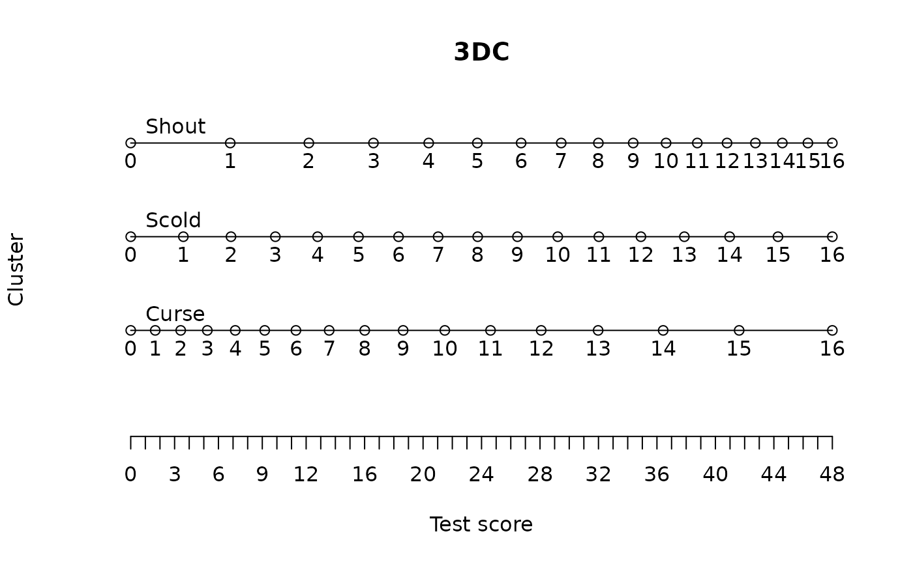

Set performance standards on one or more test forms using the data driven direct consensus (3DC) method
parameters object returned from fit_enorm
a data.frame with columns `cluster_id`, `item_id` and optionally `booklet_id`
an object containing parameters for the 3DC standard setting procedure
ignored Optionally you can include a column `booklet_id` to specify multiple test forms for standard setting and/or columns `cluster_nbr` and `item_nbr` to specify ordering of clusters and items in the forms and application.
an object containing parameters for the 3DC standard setting procedure
which test form to plot
an object of type `sts_par`
The data driven direct consensus (3DC) method of standard setting was invented by Gunter Maris and described in Keuning et. al. (2017). To easily apply this procedure, we advise to use the free digital 3DC application. This application can be downloaded from the Cito website, see the 3DC application download page. If you want to apply the 3DC method using paper forms instead, you can use the plot method to generate the forms from the sts_par object.
Although the 3DC method is used as explained in Keuning et. al., the method we use for computing the forms is a simple maximum likelihood scaling from an IRT model, described in Moe and Verhelst (2017)
Keuning J., Straat J.H., Feskens R.C.W. (2017) The Data-Driven Direct Consensus (3DC) Procedure: A New Approach to Standard Setting. In: Blomeke S., Gustafsson JE. (eds) Standard Setting in Education. Methodology of Educational Measurement and Assessment. Springer, Cham
Moe E., Verhelst N. (2017) Setting Standards for Multistage Tests of Norwegian for Adult Immigrants In: Blomeke S., Gustafsson JE. (eds) Standard Setting in Education. Methodology of Educational Measurement and Assessment. Springer, Cham
how to make a database for the 3DC standard setting application: standards_db
library(dplyr)
db = start_new_project(verbAggrRules, ":memory:")
add_booklet(db, verbAggrData, "agg")
#> no column `person_id` provided, automatically generating unique person id's
#> $items
#> [1] "S1DoCurse" "S1DoScold" "S1DoShout" "S1WantCurse" "S1WantScold"
#> [6] "S1WantShout" "S2DoCurse" "S2DoScold" "S2DoShout" "S2WantCurse"
#> [11] "S2WantScold" "S2WantShout" "S3DoCurse" "S3DoScold" "S3DoShout"
#> [16] "S3WantCurse" "S3WantScold" "S3WantShout" "S4DoCurse" "S4DoScold"
#> [21] "S4DoShout" "S4WantCurse" "S4WantScold" "S4WantShout"
#>
#> $person_properties
#> character(0)
#>
#> $columns_ignored
#> [1] "gender" "anger"
#>
add_item_properties(db, verbAggrProperties)
#> 4 item properties for 24 items added or updated
design = get_items(db) |>
rename(cluster_id='behavior')
f = fit_enorm(db)
sts_par = standards_3dc(f, design)
plot(sts_par)

# db_sts = standards_db(sts_par,'test.db',c('mildly aggressive','dangerously aggressive'))